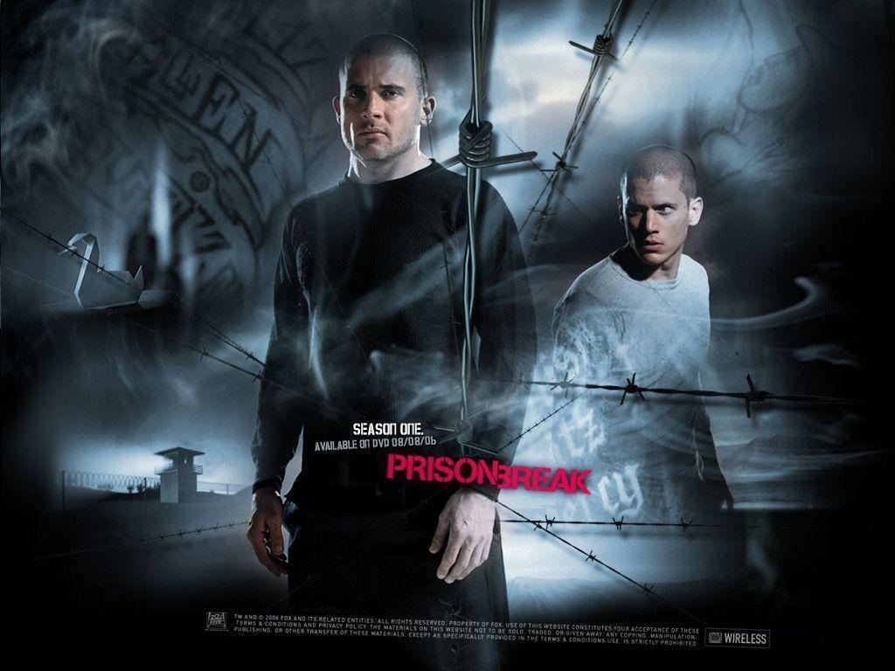
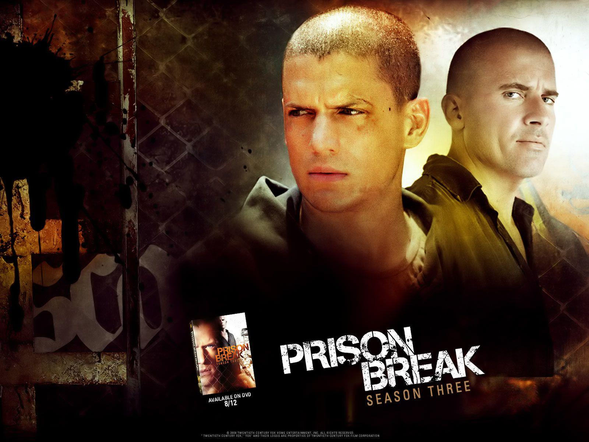
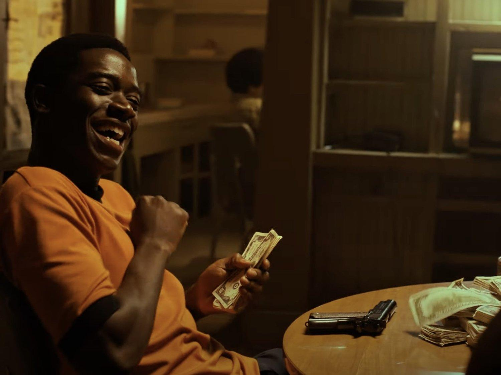
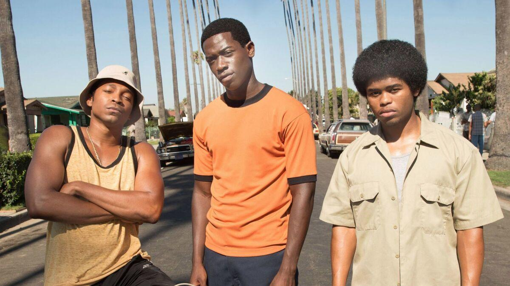
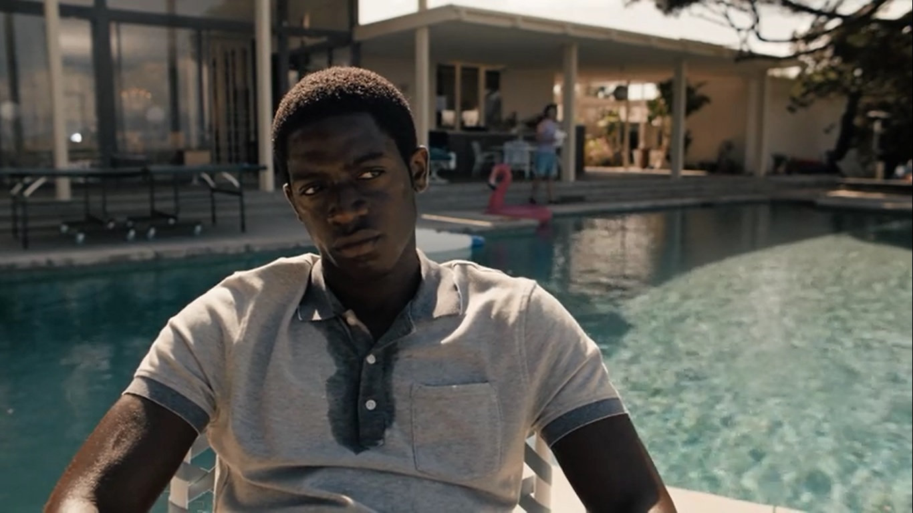
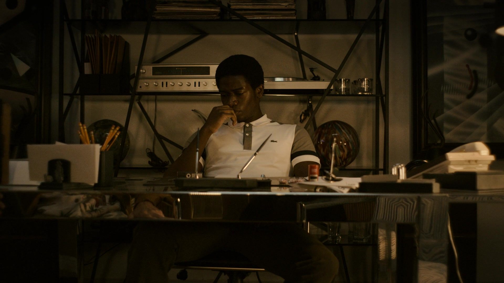

პოლიტიკური შეთქმულების გამო უდანაშაულო კაცს სასიკვდილო
განაჩენის წინაშე აყენებენ და მისი ერთადერთი იმედი მისი ძმაა, რომელიც
თავის ამოცანად აქცევს მიზანმიმართულად გაგზავნოს იმავე ციხეში, რათა ორივეს თავი დააღწიოს.
Due to a political conspiracy, an innocent man is sent to death row and his only hope is his brother,
who makes it his mission to deliberately get himself sent to the same prison in order to break the both
of them out, from the inside out.



Ლოს ანჯელესი. 1983. ქარიშხალი მოდის და მას კრეკი ჰქვია. კრეკი კოკაინის ეპიდემიისა და მისი საბოლოო რადიკალური
ზემოქმედების წინაპირობა, როგორც ჩვენ ვიცით კულტურაზე, სიუჟეტი მიყვება მრავალ პერსონაჟს ძალადობრივი შეჯახების კურსზე.
Los Angeles. 1983. A storm is coming and it's name is crack. Set against the infancy of the crack cocaine epidemic and its ultimate
radical impact on the culture as we know it, the story follows numerous characters on a violent collision course.




